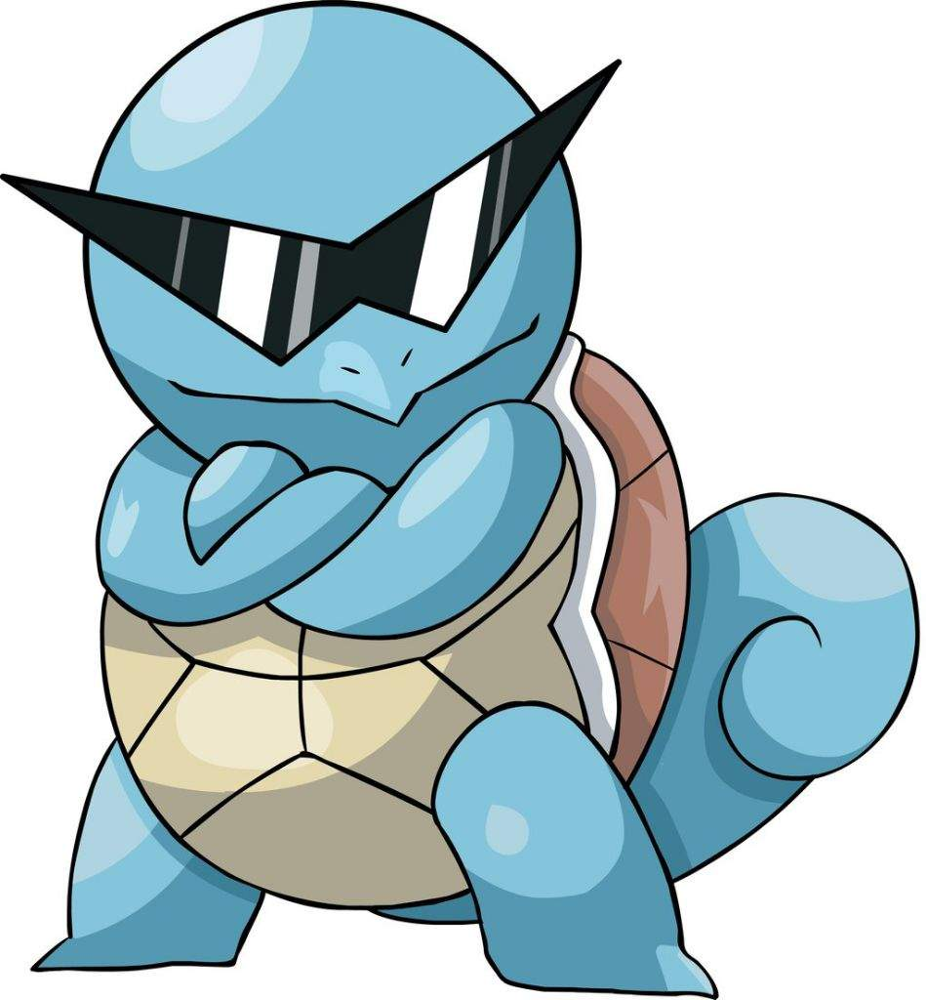
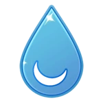

99
Tipo: Agua
Peso: 9kg
Altura: 50cm
Siguiente evolucion: Wartortle
Squirtle fue el sexto pokémon atrapado por Ash en su viaje en Kanto. Cuando se conocieron squirtle era el lider de una grupo de bandidos squirtles.